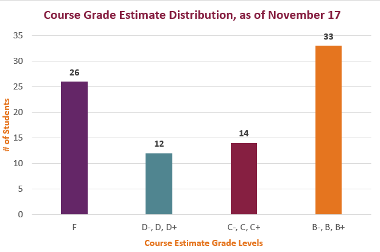

This announcement includes details on your current course grade estimate, the rubric and the process used to calculate the estimates, and grade estimate distribution for the course.
I have calculated your course progress as of 11:59 PM on November 17, 2023. You can find the estimate in the rubric for the Course Grade Estimate, as of November 17 assignment. You should be able to find it on your Grades page in Canvas.
The grade shown on the assignment is the course grade you have in the class if you do no more work. Note, however, that this will change as/if you complete additional work in the course.
To raise your grade from the estimate, complete the assignments that still have an open grace period. Prioritize the Major Projects, as they have the strongest influence on your course grade.
I do have several strict guidelines, listed below and in the Short Guide under the Additional Grade Calculation Guidelines heading:
Use this documentation from Canvas for help finding the rubric:
Here is a bar graph showing the current distribution of the grade estimates. Basically it shows an upside-down bell curve. Either you’ve done the work in the course or you haven’t.
If you have been doing the work, you likely have an estimate in the B or C range. If you haven’t been doing the work, you probably have an estimate in the D or F range.

Chart Title: Grade Estimate Distribution, as of November 17, at 11:59 PM
There are no A- or A grades because no group has submitted the Recommendation Report at this point. Since you need to earn a Complete on all five Full Drafts, you cannot earn an A without earning a Complete on the report. I expect the averages to shift up as groups finish and submit the Recommendation Report.